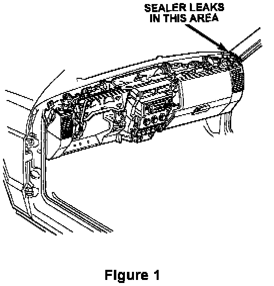

Windshield Area - Wind Noise
NO: 23-17-97GROUP: Body
DATE: Apr. 4, 1997
SUBJECT:
Wind Noise - Windshield Area
MODELS:
1996 - 1997 (ZJ) Grand Cherokee
1996 - 1997 (ZG) Grand Cherokee (Overseas Markets)
SYMPTOM/CONDITION:
Wind noise at the sides of the windshield. This noise may be a result of sealer skips/leaks in the "A" pillar area. A sealer patch is applied in the assembly process to cover an access hole in the "A" pillar. This patch may not be fully sealed to the body and may leak. This can lead to wind noise or whistles which can easily be mistaken for a windshield sealer leak.
DIAGNOSIS/REPAIR PROCEDURE:
This bulletin involves testing the "A" pillar area for sealer leaks and applying sealer to the area if leaks are found.
If wind noise is present at the "A" pillar to the sides of the windshield, perform the Repair Procedure.
1. Remove the "A" pillar interior trim.

2. Apply a solution of soapy water to the area around the sealer patch (see Figure 1).
3. From outside of the vehicle, close the door and using an approved air nozzle direct the air flow at the "A" Pillar area and watch for air bubbles.
4. If leaks are found, clean the area with a solvent such as MOPAR Super Cleen, p/n 04318015 or equivalent, and apply body seam sealer such as MOPAR 04318025 or equivalent to the affected areas.
5. Install the "A" pillar trim.
POLICY: Reimbursable within the provisions of the warranty.
TIME ALLOWANCE:
Labor Operation No:
23-50-02-94 (right side) 0.2 Hrs.
23-50-02-95 (left Side) 0.2 Hrs.
FAILURE CODE: XX - Service Adjustment